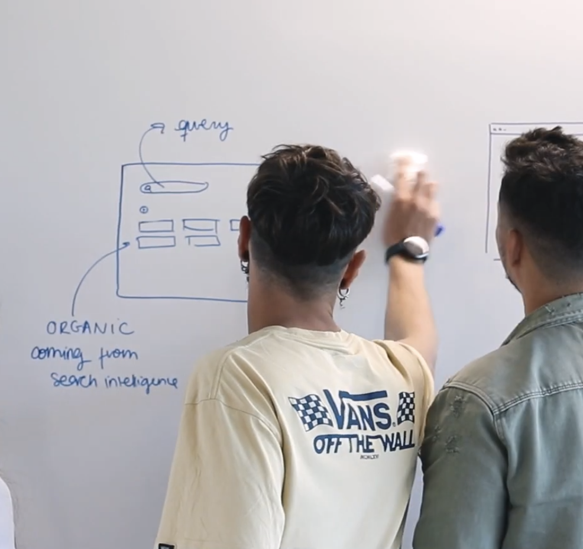

Panizo
—
Latest Article
Senior Product Engineer
 Product Manager
Product Manager
Product Engineer with a data-driven soul.
Hi! I'mAlvaro Panizo
Think of me as the bridge between deep tech expertise and product strategy.
Having evolved from hands-on Software Engineering to leading high-performing teams,I bring a unique blend oftechnical depthand product thinking to every challenge.
Because great products need more than justgood vibes.
Product thinking
Technical depth
Leadership

Experience
Experience & Core values
01
Leading high-performing teams
Product Owner / Team Leader
I don’t just manage backlogs; I build the environments where engineers do their best work.
Leading cross-functional teams across Europe, the US, and Asia, I bridge cultural and technical gaps to turn ambiguity into shippable code.
By prioritizing radical honesty and empathy, I ensure that "seeing beyond the immediate problem" becomes a team-wide habit, not just a solo effort.
02
Technical depth
Senior Software Engineer / Data and Search
I don’t just write code; I design systems that endure.
My experience spans the entire technical spectrum—from deep-tech R&D to global B2B platforms—delivering everything cloud-native gateways to full-stack SaaS solutions.
By mastering stacks like Java and streaming data, I turn information architectures into stable, scalable products that keep operational excellence at their core.
03
Product thinking
Senior Product Manager | Group Product Manager
As a Product Manager and Group Product Manager I have connected what the business needs with what gets built—in corporate ERP, SaaS, consultancy, and ad-hoc product work for both enterprise and B2C. I lead discovery and roadmap and keep architecture and product strategy in sync so that user experience and impact stay in focus and execution doesn’t default to “tech for tech’s sake”.